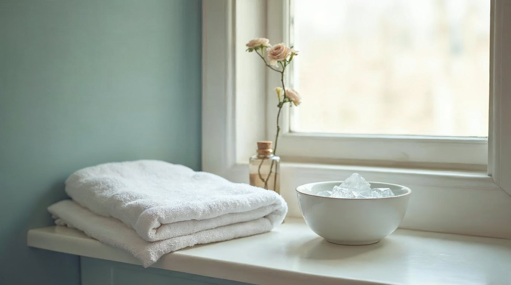
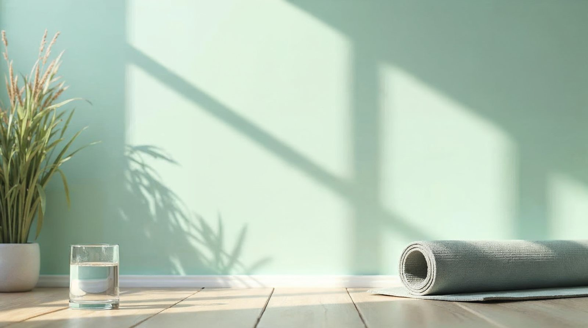
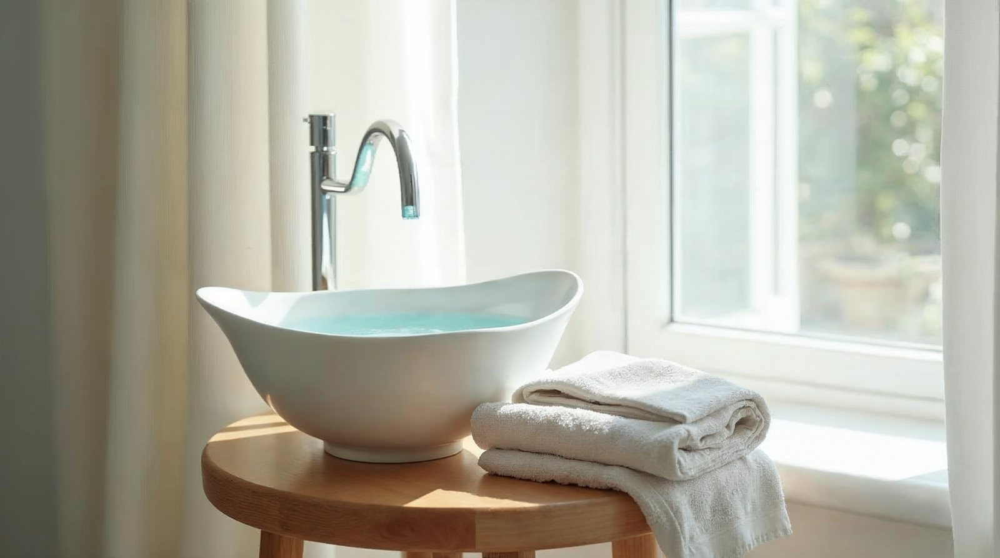
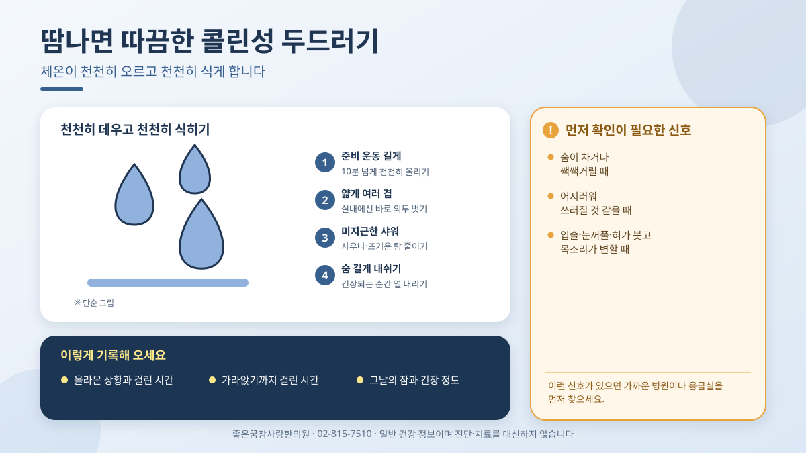

이종호 한의사 감수좋은꿈참사랑한의원 대표원장 (한의사 면허번호 19769)발행 2026-11-26 · 수정 2026-11-27
이 글의 차례
계단을 서둘러 오르거나 버스를 잡으려고 뛰고 나면 등과 팔이 갑자기 따끔따끔해집니다. 개미가 기어가는 것 같기도 하고, 작은 바늘로 콕콕 찌르는 것 같기도 해요. 셔츠를 걷어 보면 좁쌀만 한 붉은 점들이 오돌토돌 솟아 있고, 잠시 쉬고 나면 언제 그랬냐는 듯 가라앉습니다.
진료실에서 이런 얘기를 들으면 저는 "땀이 나기 시작할 때쯤 그러세요?" 하고 여쭤요. 운동할 때, 뜨거운 국물을 먹을 때, 사우나나 반신욕을 할 때, 발표를 앞두고 몸이 달아오를 때처럼 체온이 오르고 땀이 나려는 순간마다 반복된다면 콜린성 두드러기를 먼저 떠올려 봅니다.
활동이 많은 나이에 흔하게 보이는 편이에요. 운동을 좋아하는데 할 때마다 따가워서 멀리하게 됐다거나, 여름이면 사람 많은 곳이 꺼려진다는 분도 계세요. 땀은 막을 수 없는 일이라 더 답답하시죠.
그러니까 사실은 두 가지를 나눠서 보셔야 해요. '땀'이 문제인 것과 '체온이 갑자기 치솟는 것'이 문제인 건 다른 얘기거든요. 땀을 없애려 애쓰기보다, 몸이 천천히 데워지고 천천히 식게 돕는 쪽이 길이 되는 경우가 많아요.
이 글에서는 콜린성 두드러기가 어떤 모습인지, 비슷한 땀 관련 피부 불편과 어떻게 다른지, 진료실에서 무엇을 여쭙고 생활에서 무엇을 해 볼 수 있는지 차례로 정리했어요.
콜린성 두드러기는 어떤 모습인가요
가장 흔한 모습은 1~3밀리미터쯤 되는 작은 붉은 점이나 오돌토돌한 돌기가 가슴, 등, 목, 팔에 흩어져 올라오는 것입니다. 점 하나하나 주변으로 붉은 테두리가 번지기도 합니다. 일반 두드러기처럼 큰 판 모양으로 부풀기보다는 작은 점들이 잔뜩 모여 있는 모습이 많습니다.
느낌은 가려움보다 따끔거림, 찌릿함, 화끈거림으로 표현하시는 분이 많습니다. "바늘 수백 개가 동시에 찌르는 것 같다"고 말씀하시기도 합니다. 체온이 내려가고 땀이 식으면 대개 수십 분에서 한두 시간 안에 흔적 없이 사라집니다.
어떤 분은 땀이 막 나기 시작하는 순간에 가장 따갑고, 땀이 흠뻑 나고 나면 오히려 덜하다고 말씀하십니다. 반대로 땀이 잘 나지 않는 분이 체온이 오를 때 유난히 심하게 따가워하는 경우도 있어서, 평소 땀이 어느 정도 나는지를 꼭 여쭙습니다.
왜 땀이 날 때 두드러기가 올라올까요
우리 몸은 체온이 오르면 신경을 통해 땀샘에 '땀을 내라'는 신호를 보냅니다. 이때 쓰이는 신호 물질이 아세틸콜린이라서 '콜린성'이라는 이름이 붙었습니다. 이 신호에 피부 속 비만세포가 함께 반응해 히스타민 같은 물질을 내보내면, 땀이 나려는 자리마다 작은 두드러기와 따끔거림이 생깁니다.
땀 자체에 피부가 예민하게 반응하는 경우, 땀이 피부 밖으로 잘 빠져나가지 못하고 피부 속에 머무는 경우도 함께 거론됩니다. 사람마다 어느 쪽이 더 크게 작용하는지는 조금씩 달라서, 같은 이름이라도 모습과 불편의 정도가 다양합니다.
체온을 올리는 일이라면 무엇이든 방아쇠가 될 수 있습니다. 운동, 뜨거운 목욕과 사우나, 맵거나 뜨거운 음식, 술, 두꺼운 옷, 그리고 긴장이나 화처럼 마음이 달아오르는 순간도 여기에 포함됩니다. 그래서 몸의 열과 마음의 긴장을 함께 살펴보게 됩니다.
한의학에서는 몸 안의 열이 겉으로 빠져나가려 할 때 피부에 막히는 모습으로 설명해 왔습니다. 이것은 진단명이 아니라, 진찰할 때 열이 오르는 양상과 땀이 나는 방식, 긴장과 잠을 함께 살피기 위한 전통적인 표현으로 이해해 주시면 됩니다.

비슷한 땀 관련 불편과는 어떻게 다른가요
땀과 관련된 피부 불편은 여러 가지가 있어서 헷갈리기 쉽습니다. 나란히 놓아 보면 구분하는 데 도움이 됩니다.
- 땀띠: 땀구멍이 막혀 생기며, 땀이 차는 자리에 좁쌀 같은 것이 며칠씩 남습니다. 콜린성 두드러기는 체온이 내려가면 한두 시간 안에 사라지는 점이 다릅니다.
- 다한증: 손바닥, 발바닥, 겨드랑이에 땀이 지나치게 많은 상태로, 땀이 많다는 것 자체가 불편의 중심입니다. 두드러기나 따끔거림은 보통 동반되지 않습니다.
- 일반 두드러기: 땀과 상관없이 시도 때도 없이 크게 부풀어 오르며 가려움이 중심입니다.
- 운동 중 생기는 알레르기 반응: 운동이나 특정 음식을 먹은 뒤 운동할 때 두드러기와 함께 숨이 차거나 어지러운 증상이 겹칠 수 있어, 따로 확인이 필요합니다.
콜린성 두드러기는 '체온이 오르거나 땀이 나려는 순간'에 '작은 점 모양으로' '따끔하게' 올라왔다가 '식으면 금방 사라지는' 것이 특징입니다. 어느 쪽인지 헷갈리실 때는 상황과 사진을 함께 가져와 주세요.
콜린성 두드러기를 두고 자주 헷갈리는 것
첫째, 땀이 문제이니 땀을 아예 안 흘려야 한다는 생각입니다. 땀을 피하려고 움직임을 모두 끊으면 몸이 더 땀을 내기 어려운 상태가 되기도 합니다. 땀을 피하기보다 천천히, 조금씩 흘리는 연습을 하는 쪽으로 방향을 잡는 경우가 많습니다.
둘째, 운동을 하면 안 된다는 생각입니다. 강도를 낮추고 준비 운동을 길게 해서 체온이 천천히 오르게 하면 훨씬 덜 따갑다고 말씀하시는 분이 많습니다. 운동을 그만두기보다 방식을 바꿔 보는 것이 먼저입니다.
셋째, 피부만의 문제라는 생각입니다. 긴장하거나 화가 날 때, 잠이 부족할 때 더 잦아지는 경우가 흔해서, 하루의 긴장과 잠의 흐름을 함께 들여다보는 것이 도움이 됩니다.
계절과 상황에 따라 달라지는 모습
콜린성 두드러기는 여름에만 생긴다고 여기기 쉽지만, 겨울에 오히려 더 불편하다는 분도 많습니다. 추운 바깥에서 두꺼운 외투를 입고 걷다가 난방이 센 지하철이나 실내에 들어서는 순간 체온이 확 오르면서 따끔거림이 시작되기 때문입니다.
겨울에는 외투 안을 얇게 여러 겹으로 입고, 실내에 들어서면 바로 외투를 벗어 체온이 갑자기 오르지 않게 해 주세요. 목도리와 모자도 실내에서는 바로 풀어 두시는 것이 좋습니다. 이 작은 차이로 출퇴근길이 편해졌다고 말씀하시는 분이 많습니다.
학생이나 젊은 직장인처럼 활동량이 많은 시기에 더 자주 보이는 편이라, 체육 시간이나 회식 자리에서 곤란했던 경험을 말씀하시기도 합니다. 주변에 미리 알려 두고 쉬어 갈 틈을 만들어 두면 마음의 긴장도 덜고, 그만큼 덜 달아오르게 됩니다.
먼저 이렇게 여쭙니다
처음 오시면 저는 대략 이런 순서로 여쭙니다. 미리 생각해 오시면 이야기가 수월해집니다.
- 처음 시작된 것은 언제였고, 그 무렵 생활에 달라진 점이 있었나요?
- 운동, 목욕, 매운 음식, 긴장 가운데 무엇에 가장 잘 올라오나요?
- 평소 땀은 많은 편인가요, 잘 안 나는 편인가요?
- 올라온 뒤 가라앉기까지 얼마나 걸리나요?
- 두드러기와 함께 숨이 차거나 어지러웠던 적이 있나요?
- 특정 음식을 먹고 운동했을 때만 심해진 적이 있나요?
드시는 약과 영양제, 잠드는 시각, 하루 중 가장 긴장되는 시간도 함께 여쭙습니다. 피부에 나타나는 모습과 함께 몸이 열을 어떻게 다루고 있는지를 보기 위해서입니다.

일상에서 먼저 해 볼 수 있는 것
생활 관리의 방향은 '체온이 갑자기 치솟지 않게, 천천히 오르고 천천히 식게' 하는 것입니다. 작은 습관 몇 가지로 따끔거림이 한결 덜해졌다고 말씀하시는 분이 많습니다.
- 운동 전 준비 운동을 10분 이상 길게 하고, 강도는 천천히 올리기
- 땀이 날 것 같은 날에는 통기가 잘되는 얇은 옷을 여러 겹 입고 하나씩 벗기
- 사우나와 아주 뜨거운 탕은 줄이고, 미지근한 물로 짧게 씻기
- 맵고 뜨거운 음식, 술은 먹는 양과 횟수부터 줄이기
- 운동 뒤에는 시원한 곳에서 천천히 식히고, 땀은 부드럽게 눌러 닦기
- 긴장되는 일정 앞에서는 숨을 길게 내쉬며 몸의 열을 가라앉히기
어떤 분들은 미지근한 물로 샤워하거나 가볍게 걸어서 일부러 땀을 조금 흘리고, 한동안 덜 따가운 시간을 보내기도 합니다. 다만 사람마다 반응이 달라서, 처음에는 짧게 시도해 보고 어떤 변화가 있었는지 적어 두시길 권합니다.
가려움이나 따끔거림이 심할 때 피부를 세게 긁거나 문지르면 자극이 더해집니다. 시원한 수건을 가볍게 대고 체온이 내려가기를 기다리는 쪽이 피부에 부담이 적습니다. 땀이 식은 뒤에는 보습제를 얇게 발라 피부 장벽을 지켜 주세요.
잠도 중요합니다. 잠이 부족하고 피로가 쌓인 주에는 같은 운동에도 더 쉽게 올라온다고 말씀하시는 분이 많습니다. 운동을 늘리기 전에 잠드는 시각부터 일정하게 맞춰 보는 것도 좋은 출발입니다.

병원 진료와는 어떻게 함께 가나요
피부과에서는 증상이 생기는 상황과 모양을 보고 판단하며, 필요하면 운동이나 따뜻한 물로 체온을 올려 반응을 확인하기도 합니다. 가려움과 따끔거림을 줄이는 항히스타민제를 처방받는 경우가 많고, 처방받은 약은 처방한 선생님의 안내대로 이어 가셔야 합니다.
한의원 진료는 이런 진료를 대신하는 것이 아니라 나란히 갑니다. 병원에서 진단과 약을 챙기고, 한의원에서는 열이 오르는 몸의 양상, 땀, 긴장과 잠처럼 두드러기와 함께 움직이는 몸 전체의 흐름을 살핀다고 생각해 주시면 됩니다.
병원에 가실 때도 상황 기록과 사진은 큰 힘이 됩니다. 어떤 운동을 몇 분쯤 했을 때, 몇 도쯤의 물에서 올라왔는지를 말씀하시면 판단과 약을 정하는 데 참고가 됩니다. 같은 기록을 한의원에도 가져오시면 두 곳에서 같은 그림을 보며 이야기할 수 있습니다.
두드러기 약을 드시는 동안 낮에 졸음이 오거나 몸이 처지는 느낌이 있다면 처방한 선생님께 알려 주세요. 약의 종류나 드시는 시각을 조정해 해결되는 경우가 있습니다. 운동을 이어 가실 때도 그 변화를 함께 적어 두시면 좋습니다.
한의원에서 함께 살필 수 있는 경우
- 운동이나 목욕 때마다 따끔거림이 반복되어 일상이 불편한 경우
- 얼굴로 열이 잘 오르고 긴장하면 몸이 쉽게 달아오르는 경우
- 땀이 잘 나지 않거나, 반대로 땀이 많아 함께 불편한 경우
- 병원 약을 드시면서 생활 관리와 몸의 흐름을 함께 살피고 싶은 경우
좋은꿈참사랑한의원에서는 모든 분의 맥을 먼저 짚고, 아래 '먼저 확인이 필요한' 신호가 없는지도 함께 봅니다. 그다음 얼굴과 손발의 온도, 피부 상태, 사진 속 두드러기 모양을 함께 살핍니다. 땀이 나는 자리와 양, 잠과 소화도 여쭙습니다.
진찰한 내용을 바탕으로 생활에서 바꿔 볼 것 하나와 함께 침, 한약 상담 가운데 지금 상태에 맞는 것을 정합니다. 한약을 상의할 때는 드시는 약을 모두 확인한 뒤 신중하게 정하고, 임신 중이시거나 임신 가능성이 있다면 먼저 알려 주시고 산부인과와도 상의해 주세요.
이렇게 기록해 오시면 상담이 쉬워집니다
콜린성 두드러기는 상황과 함께 기록해야 흐름이 보입니다. 2주 정도만 간단히 적어 보세요.
- 올라온 상황: 운동, 목욕, 음식, 긴장 등
- 땀이 나기 시작해서 올라오기까지 걸린 시간
- 올라온 자리와 모양, 가능하면 사진
- 가라앉기까지 걸린 시간
- 그날의 잠, 피로, 긴장 정도
- 드신 약과 그 뒤의 변화
기록을 모아 보면 어떤 운동 강도에서, 어떤 온도의 물에서 견딜 만한지가 보이기 시작합니다. 그 기준이 생기면 피할 것과 해 볼 것을 나눌 수 있습니다.
땀과 다시 친해지기
땀은 몸이 열을 내보내는 고마운 통로예요. 콜린성 두드러기가 있으면 그 통로가 잠시 예민해진 거라고 생각해 주세요. 땀을 적으로 여기기보다, 천천히 데우고 천천히 식히는 리듬을 몸에 익혀 가는 게 오래가는 방법이에요.
운동하지 말라는 게 아니에요. 운동은 하시되, 방식을 조금 바꿔 보자는 거예요. 처음엔 따끔거림이 무서워 몸을 움직이는 일 자체가 망설여질 수 있어요. 원래 그래요. 그럴 땐 시원한 아침 시간에 가볍게 걷는 것부터 시작해 보세요.
몸의 열과 긴장을 살피는 건 제가 맡을게요. 대신 하나만 부탁드려요. 운동 전 준비 운동을 평소보다 5분만 길게 해 주세요. 딴 건 하시던 대로 편하게 하셔도 돼요.
견딜 만한 강도를 몸이 기억하기 시작하면 마음도 같이 가벼워져요. 다음에 오시면 그 주의 기록을 같이 펼쳐 놓고, 어떤 순간이 가장 편했는지부터 얘기해요. 궁금한 건 그냥 편하게 물어보세요.
이런 증상은 먼저 확인이 필요합니다
- 두드러기와 함께 숨이 차거나 쌕쌕거리고, 어지러워 쓰러질 것 같은 경우
- 입술, 눈꺼풀, 혀나 목 안이 붓고 목소리가 변하는 경우
이런 신호가 있으면 한의원보다 가까운 병원이나 응급실을 먼저 찾으세요.
함께 읽으면 좋은 글
- 손바닥·발바닥·겨드랑이에 땀이 너무 많은 다한증은 어떻게 살피나요?
- 여름에 땀이 차는 곳마다 붉은 좁쌀 같은 것이 올라올 때는 어떻게 살피나요?
- 저녁만 되면 두드러기가 올라왔다 사라지기를 반복할 때는 어떻게 살피나요?
- 얼굴이 달아오르고 땀이 갑자기 날 때는 어떤 점을 살펴보나요?
- 가려움이 낮에 심한지 밤에 심한지는 왜 묻고, 어떻게 적어 두나요?

여쭙는 것
- 처음 시작된 것은 언제였고, 그 무렵 생활에 달라진 점이 있었나요?
- 운동, 목욕, 매운 음식, 긴장 가운데 무엇에 가장 잘 올라오나요?
- 평소 땀은 많은 편인가요, 잘 안 나는 편인가요?
생활에서 해 볼 것
- 운동 전 준비 운동을 10분 이상 길게 하고, 강도는 천천히 올리기
- 땀이 날 것 같은 날에는 통기가 잘되는 얇은 옷을 여러 겹 입고 하나씩 벗기
- 사우나와 아주 뜨거운 탕은 줄이고, 미지근한 물로 짧게 씻기
한의원에서 함께 살필 것
- 운동이나 목욕 때마다 따끔거림이 반복되어 일상이 불편한 경우
- 얼굴로 열이 잘 오르고 긴장하면 몸이 쉽게 달아오르는 경우
- 땀이 잘 나지 않거나, 반대로 땀이 많아 함께 불편한 경우
먼저 확인이 필요한 신호
- 두드러기와 함께 숨이 차거나 쌕쌕거리고, 어지러워 쓰러질 것 같은 경우
- 입술, 눈꺼풀, 혀나 목 안이 붓고 목소리가 변하는 경우
한눈에 보는 표
| 구분 | 핵심 |
|---|---|
| 여쭙는 것 | 처음 시작된 것은 언제였고, 그 무렵 생활에 달라진 점이 있었나요? 운동, 목욕, 매운 음식, 긴장 가운데 무엇에 가장 잘 올라오나요? |
| 생활에서 해 볼 것 | 운동 전 준비 운동을 10분 이상 길게 하고, 강도는 천천히 올리기 땀이 날 것 같은 날에는 통기가 잘되는 얇은 옷을 여러 겹 입고 하나씩 벗기 |
| 한의원에서 함께 살필 것 | 운동이나 목욕 때마다 따끔거림이 반복되어 일상이 불편한 경우 얼굴로 열이 잘 오르고 긴장하면 몸이 쉽게 달아오르는 경우 |
| 먼저 확인이 필요한 신호 | 두드러기와 함께 숨이 차거나 쌕쌕거리고, 어지러워 쓰러질 것 같은 경우 입술, 눈꺼풀, 혀나 목 안이 붓고 목소리가 변하는 경우 |
자주 묻는 질문
콜린성 두드러기가 있으면 운동을 그만둬야 하나요?
그만두기보다 방식을 바꿔 보는 경우가 많습니다. 준비 운동을 길게 하고 강도를 천천히 올리며, 시원한 곳에서 하는 것만으로도 덜 따갑다고 말씀하시는 분이 많습니다.
뜨거운 물로 목욕하면 안 되나요?
아주 뜨거운 탕이나 사우나는 체온을 빠르게 올려 반응을 키울 수 있습니다. 미지근한 물로 짧게 씻고, 목욕 뒤에는 천천히 식히시길 권합니다.
땀띠와는 어떻게 구분하나요?
땀띠는 땀이 찬 자리에 좁쌀 같은 것이 며칠씩 남는 경우가 많고, 콜린성 두드러기는 체온이 내려가면 보통 한두 시간 안에 사라집니다. 사진과 상황을 함께 보면 구분에 도움이 됩니다.
항히스타민제를 먹으면서 한의원 진료를 받아도 되나요?
드시는 약을 알려 주시면 그에 맞춰 진료 방향을 정합니다. 처방받은 약은 처방한 선생님 안내대로 이어 가시고, 한약은 드시는 약을 모두 확인한 뒤 신중하게 정합니다.
좋은꿈참사랑한의원은 재진 때 지난번 이야기부터 이어서 여쭙니다. 진료시간과 예약은 오시는 길에서 확인하세요.
어디서 상담받을 수 있나요?
좋은꿈참사랑한의원은 서울 동작구 만양로2길 2 신성빌딩 3층·5층(서울 동작구 상도동, 7호선 상도역 3번 출구 근처)에 있습니다. 한의사 3명(이종호 대표원장, 조영기 수석진료원장, 정원영 진료원장)이 진료합니다. 진료시간은 평일 09:30~20:00(점심 13:00~14:00), 토·일·공휴일 09:30~15:00이며, 방문 전 전화로 확인을 권합니다. 예약은 네이버 예약, 카카오톡 상담, 전화 02-815-7510로 받습니다.
이 글은 일반적인 건강 정보이며 개인의 진단이나 치료를 대신하지 않습니다. 증상이 있거나 복용 중인 약이 있다면 진료를 통해 확인하세요. 치료 효과는 개인마다 다를 수 있습니다.
작성 기준: 일반적으로 알려져 있는 건강 정보를 참고해 정리했습니다(대표원장 감수). 증상 기록은 1~2주 동안 하루 1회, 비슷한 시간에 적어 오시면 지난 상태와 비교하기 쉽습니다.